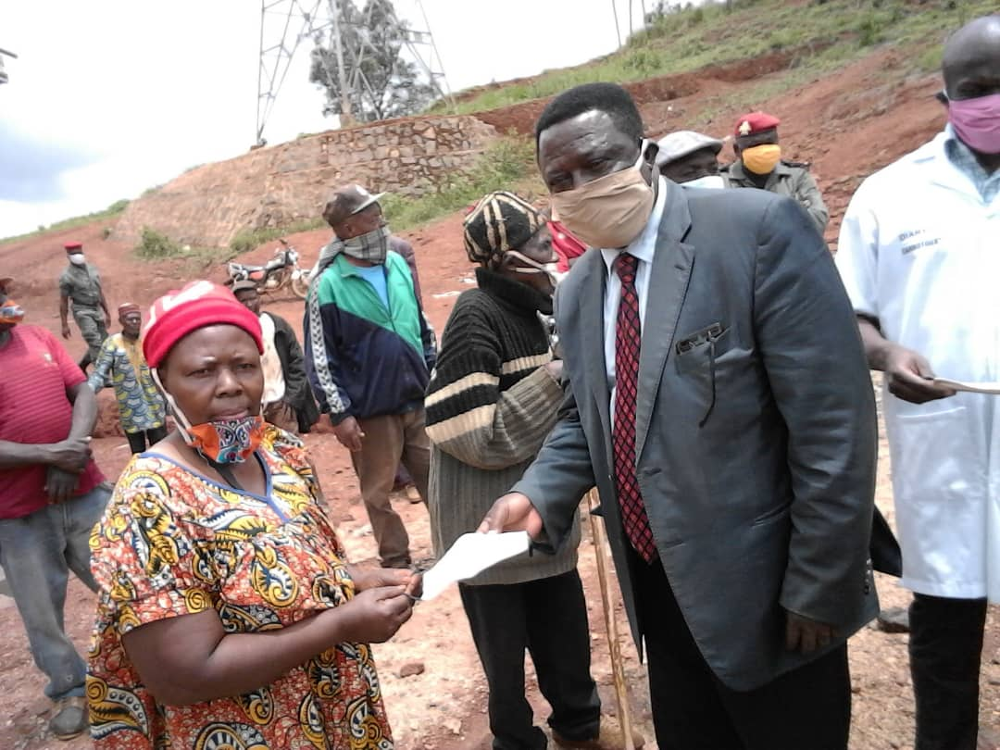

Responsible in these difficult times. Bringing help where it is needed the most.
Ernie Tagho
April 17, 2020
Excepts from the Mayor of Batie during a recent field trip to meet the population amd sensitize them on the Dos and Don’ts with COVID19.
Find below some pictures of the day today April 17th 2020 in the continuation of the tour of the local health monitoring committee in the field. After the villages Balagou 2 and Balagou 1, we were today in the villages Badjeugou, Balig, Bachepan and Bameutchouè Fodom. Tomorrow, we will finish with Bametchetcha, Bahiala, Bafamgoum 1 and Bafamgoum 2. Mr. the Prefect of the Hauts-Plateaux met us at Bachepan to continue the sensitisation and distribution of easential items that will enable the local popoluation cope with COVID19.
Excepts from the Mayor of Batie: Mr Dombu Dombu
- Chers tous: Merci de trouver ci-dessous quelques images de la journée d'aujourd'hui dans la poursuite de la tournée du comité local de veille sanitaire sur le terrain. Après les villages Balagou 2 et Balagou 1, nous avons été aujourd'hui dans les villages Badjeugou, Bali, Bachepan et Bameutchouè Fodom. Demain, nous terminerons par Bametchetcha, Bahiala, Bafamgoum 1 et Bafamgoum 2. M. le Préfet des Hauts-Plateaux nous a retrouvés à Bachepan.
